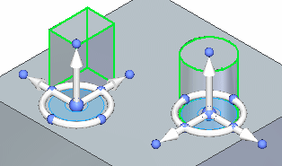
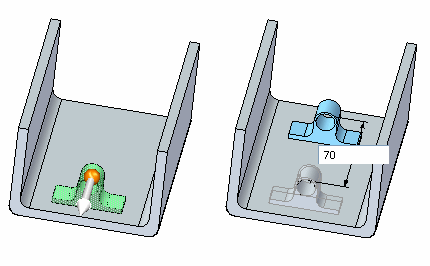

Cut, copy, or paste a feature
You can place a feature on the Windows Clipboard with the Cut or Copy command, and then paste the feature into the current document or another document with the Paste command.
Cut an element
-
Select the feature you want to cut.
-
Choose Home tab→Clipboard group→Cut .
Note:You can also press Ctrl+X.
Copy an element
-
Select the feature you want to copy.
-
Choose Home tab→Clipboard group→Copy
 . Note:
. Note:You can also press Ctrl+C.
When selecting a synchronous feature, it is important to position the steering wheel plane on the selected feature at a point that would be coincident with a face to be attached to. Also make sure the normal axis points in a direction as shown.

Paste a feature
for ordered features
-
Choose Home tab→Clipboard group→Paste
 . Note:
. Note:You can also press Ctrl+V.
A 2D representation of the feature is attached to the cursor. As you move the cursor over planar faces on the model, the 2D representation changes its orientation to match the orientation of the highlighted face.
-
Select a highlighted face plane to place the elements.
for synchronous features
-
Choose Home tab→Clipboard group→Paste
. You can also press Ctrl+V.
-
Position the feature, and then click to paste it.
Note:You can use the steering wheel to move the geometry into the desired position and orientation after the geometry is pasted.
-
Use the Attach command to attach the detached geometry to the model.
-
The contents of the Clipboard remain unchanged until you use the Cut or Copy command again.
-
You can also copy synchronous elements by selecting them, and then clicking the Copy button
 on the command bar after initiating a move or rotate.
on the command bar after initiating a move or rotate. -
To copy synchronous elements during a move, select the synchronous elements you want to copy, press the Ctrl key, and click an arrow of the steering wheel that is in the direction you want to copy. To complete the copy, drag the cursor to a new location and either click or type in a distance to copy the element.

-
To copy synchronous elements during rotate, select the synchronous elements you want to copy, press the Ctrl key, and click a torus of the steering wheel. To complete the copy, drag the cursor to a new location and either click or type in an angle to copy the element.

-
You cannot run the Paste command if the Clipboard is empty.
-
When pasting synchronous elements, you can click the F3 key to lock to a plane on which you want to paste the elements.